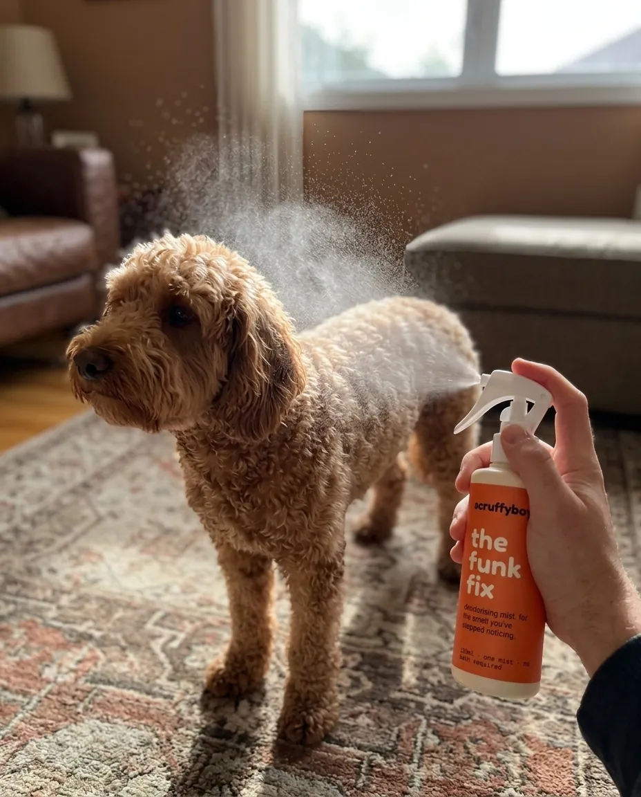

how to deal with a dirty dog.
Straight, useful know-how for the stretch between grooms. No baby talk, no fifteen-step routines, just what actually works.

how to clean a dog without a bath
Most between-groom messes don't need the tub. The waterless method, by mess type, and when a real bath is actually worth it.
read the guide →
how to get mud off a dog
The fastest way is to wait. Why dried mud brushes off and wet mud smears, how to spot-clean the rest without a bath, and how to keep it out of the car.
read the guide →
getting sand and salt out of the coat
They come off in opposite ways: let the sand dry and brush it out, but rinse the salt off with water. Why both matter for his skin, and the order that works.
read the guide →
cleaning your dog's paws after the beach or a trail
Most walk guides stop before the dog gets filthy. The other half: salt, sand and mud off the paws in ninety seconds, before it's in the car.
read the guide →
how to dry a dog in humid weather
In a humid climate a damp coat never really finishes drying, and that's where the smell and the itch start. Getting the water out at the skin, where it counts.
read the guide →
why your dog still smells after a bath
You washed him and he still smells. The usual culprits (a damp undercoat, ears, paws, bedding, over-bathing) and how to actually fix the funk.
read the guide →
he rolled in something disgusting
Fox poo, dead fish, mystery horrors. Why plain water first makes it worse, and the order that gets the smell out properly.
read the guide →
getting the dog smell out of your car
The smell is in the seats, not the air. The deep clean that actually shifts it, and the ninety-second habit at the boot that stops it coming back.
read the guide →
stopping the house smelling of dog
Visitors can smell it, you can't. Where it actually lives (the bed, the sofa, the dog) and the weekly routine that keeps it gone without air freshener.
read the guide →
washing the dog's bed
The smelliest object in most homes and the least washed. The honest schedule, how to wash it without wrecking it, and when the bed is past saving.
read the guide →
the between-grooms routine
The groomer handles the deep clean. The other six weeks are yours. The after-every-walk, weekly and monthly jobs, none longer than five minutes.
read the guide →
how often should you bathe your dog
Less often than you think, and washing too much makes the smell worse. The honest answer by coat type, plus how to keep an active dog clean between baths.
read the guide →
how to bathe a dog properly
For the days a bath is genuinely earned: lukewarm water, the right order, rinsing twice as long as feels reasonable, and drying so the clean lasts.
read the guide →
when he hates the bath
The fear is learned, so it can be unlearned. The step-by-step rebuild, the mistakes that reset it, and staying clean without water in the meantime.
read the guide →
dealing with the shedding
You can't stop it, only decide where the hair ends up. The brushing routine by coat type, why you never shave a double coat, and when shedding is a symptom.
read the guide →
dealing with matted fur
Mats tighten, pull skin and hide trouble. Working out the small ones, the one tool never to use, and when the job belongs to a groomer.
read the guide →
curly coats, and the mat problem
Low shedding is not low maintenance: the loose hair stays in and mats. Line brushing, the comb test, and matching the haircut to the life. Personal, this one.
read the guide →
double coats, and the great shed
Two coats doing two jobs, and they maintain themselves if you rake the dead undercoat out. Surviving the blow, bathing rarely, and never shaving it.
read the guide →
short coats: easy, not effortless
Staffies, beagles and boxers barely need grooming, which is how it gets skipped. The five-minute mitt routine, the year-round shed, and skin you can actually see.
read the guide →
grooming a puppy, from the start
Every bath-fighting adult dog learned it as a puppy. The short, boring, rewarded sessions that build a dog who lets you do anything.
read the guide →grooming an older dog
Old dogs need more help exactly when they can tolerate less. Joint-friendly handling, the nail problem nobody expects, and telling the groomer he's thirteen.
read the guide →
bringing home a rescue
He arrives smelly and the worst move is a day-one bath. What to clean now, what to leave, and how gentle grooming builds the trust everything runs on.
read the guide →
choosing a groomer
Grooming is barely regulated, so the sign outside proves little. The questions worth asking, the green flags, and the walk-away signs.
read the guide →
hiking with your dog
The heat, water and leash basics that keep a dog safe on the trail, and the cleanup every trail guide skips: mud, sand and stream water off him before he's back in the car.
read the guide →
camping with your dog
Three days, no bath, everyone happy. The short packing list, the evening routine that saves the tent, and the going-home cleanup.
read the guide →
running with your dog
The best training partner there is, once he's built up like one. The age gate, the ten-percent rule, paws and heat, and the post-run routine.
read the guide →
road trips with your dog
Restraint that would survive a stop, carsickness, the every-two-hours rhythm, the hot-car rule with no exceptions, and arriving with a clean-ish dog.
read the guide →
after the swim
Chlorine, lake water and salt each leave something behind. The five-minute rinse-and-dry, and the ear rule that saves swimming dogs a lot of vet visits.
read the guide →
keeping the dog cool
Dogs can't sweat their way out of heat and will chase a ball into danger. Walk timing, the tarmac test, cooling that works, and the signs that mean vet, now.
read the guide →
walking in the rain anyway
The walk still happens. The gear that earns its place, the dogs who refuse the door, and the ninety-second at-the-door routine that saves the house.
read the guide →
winter: salt, grit and slush
Road salt burns pads and dogs lick them clean. The two-minute door routine, ice balls between the toes, and protecting pads before the walk.
read the guide →
what to look for in a dog shampoo
How to read the back of the bottle without the marketing noise: pH, surfactants, fragrance and the "natural" claims worth ignoring.
read the guide →
the waterless wash, explained
No-rinse cleaning explained honestly: how it works, where it shines, what it can't replace, and how to pick one. Yes, we're biased. It's all on the page.
read the guide →
what's wrong with the pet grooming aisle
Built around the full bath, the baby-talk branding and one-size formulas, and blind to the dog who's just a bit dirty between grooms. Our point of view.
read the guide →More on the way. Join the list and we'll send the good ones. One or two emails a month, no filler.